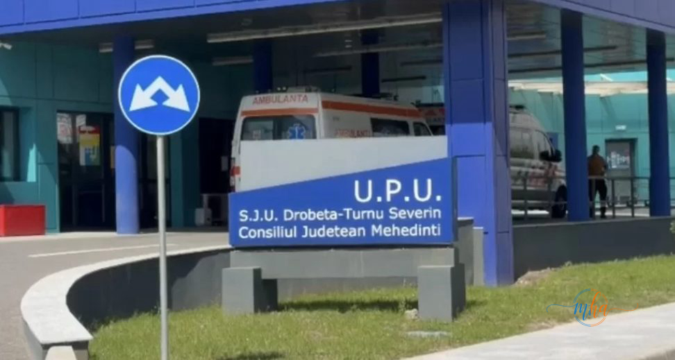
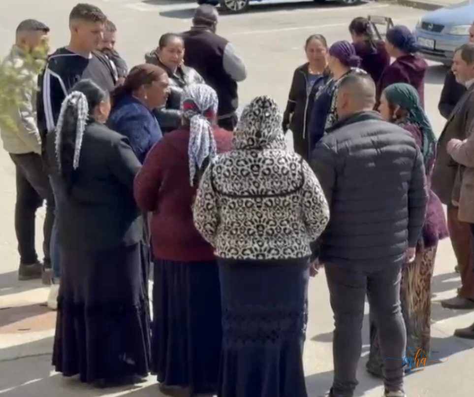

O tragedie cutremurătoare a avut loc în această dimineață în Strehaia, unde o fetiță în vârstă de doar două luni și jumătate a fost găsită fără viață.
Potrivit primelor informații, familia a solicitat intervenția ambulanței după ce micuța s-a simțit rău. La sosirea echipajului medical din localitate, copilul era deja în stop cardio-respirator, fără semne vitale.

Spitalul Județean de Urgență Drobeta-Turnu Severin — U.P.U.
🚑 Intervenția echipajelor medicale
Echipajul ambulanței a intervenit de urgență și a efectuat manevre de resuscitare, însă eforturile medicilor nu au putut salva viața fetiței. Moartea bebelușului a fost constatată la fața locului.
Familia, devastată de durere, a adunat în fața spitalului rude și apropiați, toți copleșiți de pierderea tragică a micuței.

Familia și apropiații, adunați în fața spitalului, copleșiți de durere
⚖️ Ancheta autorităților
Poliția și Parchetul au fost sesizate și au deschis o anchetă pentru a stabili cu exactitate cauzele morții bebelușului. Medicii legiști vor efectua o necropsie pentru a determina împrejurările exacte ale tragediei.
Cazurile de moarte subită la sugar sunt investigate cu prioritate de autorități. Ancheta va stabili dacă este vorba de o cauză medicală sau de alte circumstanțe.
Tragedia a îndoliat întreaga comunitate din Strehaia și județul Mehedinți.
Vom reveni cu informații actualizate pe măsură ce ancheta avansează.
Redactia MehedintiAzi.ro